Environmental Data Scientist specializing in climate change models for surface water, flood, evapotranspiration using remote sensing & machine learning.
I’m really interested in being an environmental data scientist, especially using remote sensing technology to tackle important issues related to climate change and environmental sustainability. I analyze and monitor surface water, detect floods, assess water quality, study soil moisture, evotranspiration, and understand vegetation dynamics. My goal is to provide insights that help manage the changing landscapes of our planet. I use my skills in Python and R to create strong models and workflows that help process and understand complex datasets, making sure we handle environmental issues accurately and efficiently. I have some technical skills that I use as a peer reviewer for top environmental journals, where I look at new research closely to help improve the scientific community as a whole. I'm really interested in figuring out how to detect changes in surface conditions and coming up with new ideas for sustainable practices. I'm dedicated to learning more about how our planet works.
Throughout my academic and professional career, I have cultivated a strong passion for addressing challenges in multidisciplinary fields. My experience has shaped my approach to problem-solving, emphasizing the importance of critical thinking to break down complex issues into manageable components. Guided by energy and determination, I have successfully navigated numerous obstacles. Moreover, I recognize the vital role effective communication plays in achieving team objectives. Strong relationships foster collaboration and innovation, qualities essential for any group's success.
I earned my bachelor's degree from Gonabad University, where I gained a solid understanding of the core principles of civil engineering. This foundational knowledge paved the way for my master's degree at Shahrood University of Technology, where I deepened my expertise in hydraulic structures and water engineering. During my master's studies, I had the privilege of collaborating on research with esteemed professors Ahmad Ahmadi and Behnaz Bigdeli. My thesis, titled "Surface Water Body Detection and Flood Monitoring Using Fusion of Multiple Remote Sensing Data," explored innovative methods for monitoring water bodies and assessing flood risks. The central focus of my research highlighted the benefits of integrating multi-spectral sensors and Synthetic Aperture Radar (SAR) to monitor flood events and detect surface water.
<We adopted a comprehensive approach that incorporated data fusion, time series analysis, supervised machine learning techniques, and decision-making processes to enhance the accuracy and effectiveness of systems designed for surface water detection and flood monitoring. This work not only contributed to the academic community's understanding but also emphasized the vital role of advanced technologies in tackling water management challenges. I remain dedicated to applying my academic background and research expertise to further the fields of environmental disaster management and civil engineering as I advance in my professional journey.
Shahrood University of Technology
Thesis: “Surface Water Body Detection and Flood Monitoring Using Fusion of Multiple Remote Sensing Data”
2018 - 2021
Thesis GPA: 4/4
The University of Gonabad
Thesis: “Investigation of Water Pipelines in Gonabad and Modeling with WaterGEMS”
2014 - 2018
GPA: 3.45/4
Peer Reviewer of SPEI Journal (Journal of Applied Remote Sensing)
Candidate for Best Young Researcher at Shahrood University of Technology (2021)
Presenting the article orally in 12 National Civil Congress
Ranked 3rd among 15 M.Sc. Student of Water and Hydraulic Structure at Shahrood University of Technology (2021)
Organizer of the workshop on the application of machine learning in remote sensing
Organizer of three successful workshops on “professional article writing” and “journal peer review structures”
My journey through academic research and professional experience
With five years of active experience as a peer reviewer for Springer and Frontiers journals, I have evaluated numerous manuscripts focusing on the application of remote sensing to environmental issues. My role involved critically assessing research quality, novelty, and methodological rigor, contributing to the advancement of knowledge in this interdisciplinary field. This ongoing engagement has enhanced my understanding of emerging trends and challenges, while also fostering a commitment to maintaining high editorial standards.
Application of Remote Sensing and Machine Learning
Application of Remote Sensing Course
Organized multiple successful workshops:
My academic contributions to the fields of remote sensing and environmental science
Goodarzi, M., Sabaghzadeh, M., Barzkar, A., Niazkar, M., Saghafi, M. (2024)
Water and Environment Journal
View PublicationSaghafi, M., Ahmadi, A., & Bigdeli, B. (2021)
Journal of Applied Remote Sensing, 15(1), 14521
View PublicationSaghafi, M., Ahmadi, A., & Bigdeli, B. (2021)
Journal of Watershed Management Science and Engineering
View PublicationHighlighted projects showcasing my expertise in remote sensing and environmental data science
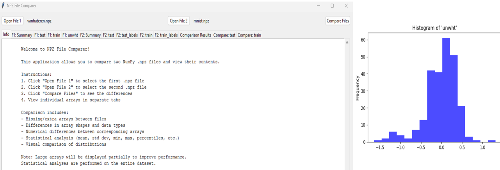
The enhanced NPZ Comparer application provides researchers with a powerful tool for detailed statistical comparison of NumPy arrays. By combining structural comparison with comprehensive statistical analysis and visualization, it enables more nuanced assessment of numerical differences than traditional file comparison utilities.
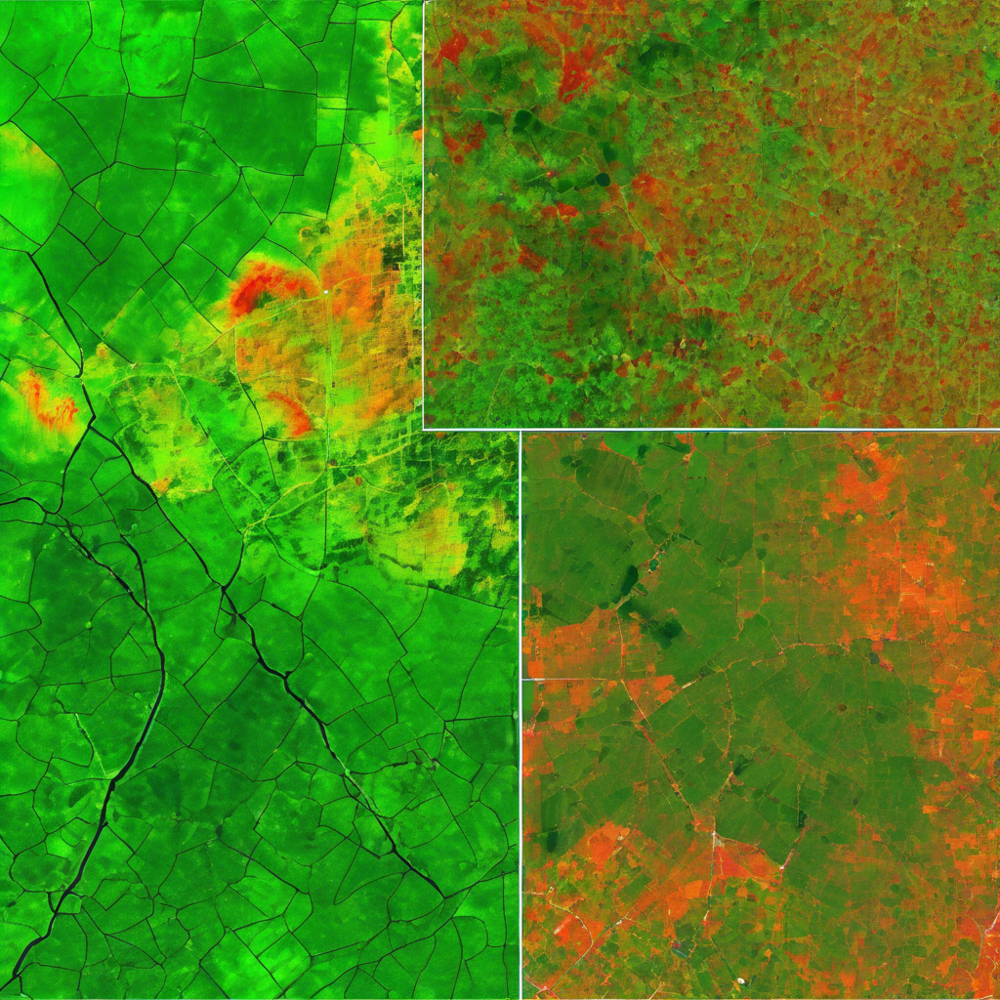
The use of R in remote sensing offers a powerful and efficient approach to analyzing vegetation dynamics, particularly by utilizing multispectral data from platforms like Sentinel-2. This project illustrates the process of reading, subsetting, and processing Sentinel-2 multispectral imagery with R, emphasizing its capabilities in vegetation analysis. By leveraging established libraries and workflows within the R environment, the study demonstrates techniques to extract key vegetation indices, track temporal changes, and derive insights into ecosystem health. The combination of R’s analytical capabilities with remote sensing data empowers researchers and practitioners to better understand vegetation dynamics, supporting fields such as agriculture, forestry, and environmental monitoring.
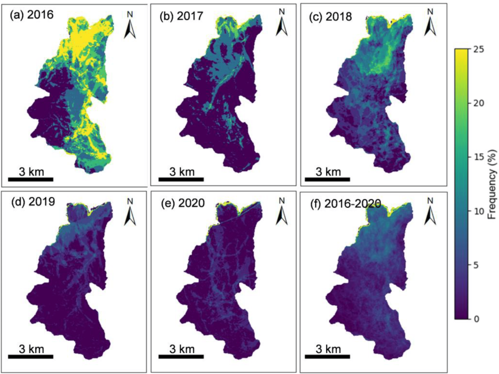
The project focuses on classifying Harmful Algal Blooms (HAB) using the Sentinel-2 satellite dataset within the Google Earth Engine (GEE) platform. The workflow encompasses several essential steps, starting with the preparation and pre-processing of high-resolution Sentinel-2 imagery to ensure data quality and relevance. The methodology involves calculating a chlorophyll index, a key indicator for detecting and analyzing algal concentrations in aquatic ecosystems. By applying advanced machine learning classification techniques, the project identifies and maps HAB occurrences with greater precision. This approach underscores the integration of remote sensing and computational tools to tackle environmental challenges, providing an efficient and scalable solution for HAB monitoring and management.
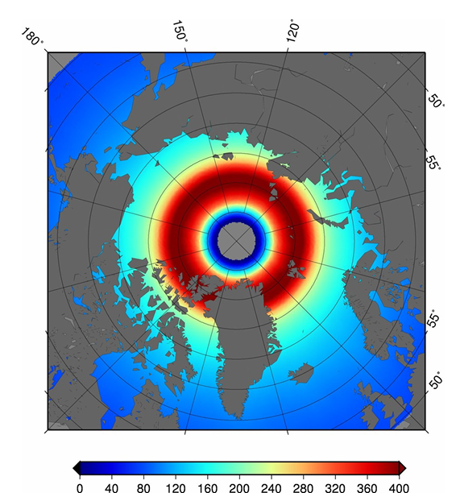
The extraction of brightness temperature data from Level 3 SMOS NetCDF files using Python enables researchers to leverage satellite data for various environmental and climatic studies. By utilizing libraries such as netCDF4, numpy, and pandas, this method efficiently retrieves parameters of interest for multiple geographic coordinates. This approach not only enhances data accessibility but also promotes broader applications of satellite-derived observations in understanding terrestrial and marine systems. Future enhancements may involve integrating additional data processing techniques or user interfaces for enhanced usability in research environments.
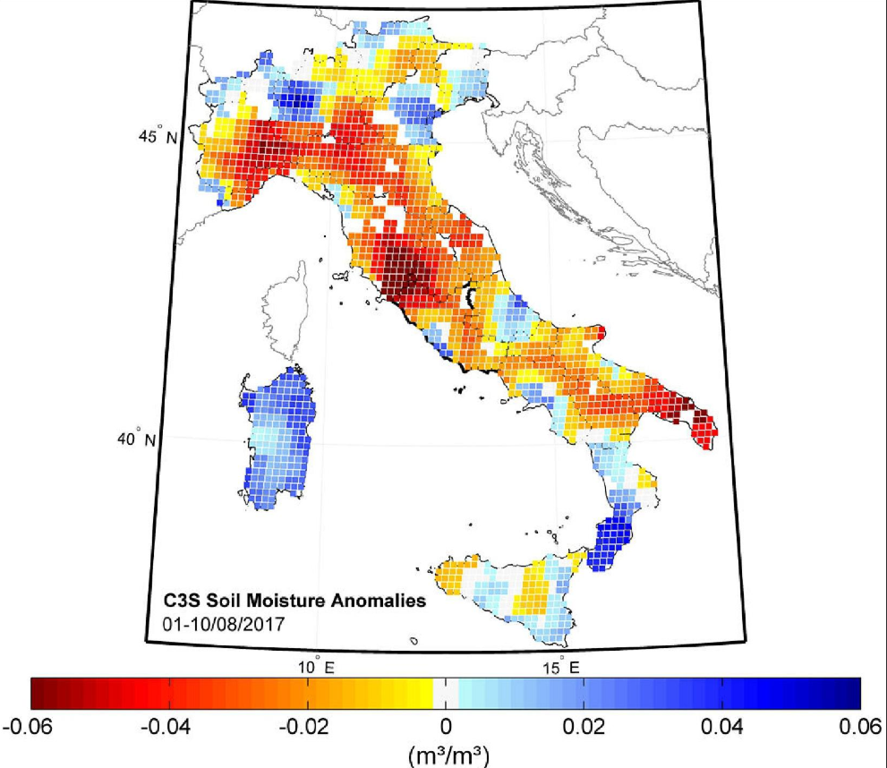
Extracting soil moisture, water content, and optical thickness data from Level 3 SMOS (Soil Moisture and Ocean Salinity) NetCDF files involves using Python libraries such as NetCDF4 and NumPy. This process requires first opening the NetCDF file and identifying the relevant variables related to soil moisture and optical thickness. By specifying the desired geographical coordinates, users can subset the data to extract specific measurements. Through careful manipulation of the datasets, one can effectively analyze the soil moisture and water content, providing valuable insights for agronomic and hydrological studies. This method promotes a deeper understanding and application of satellite-derived environmental data.
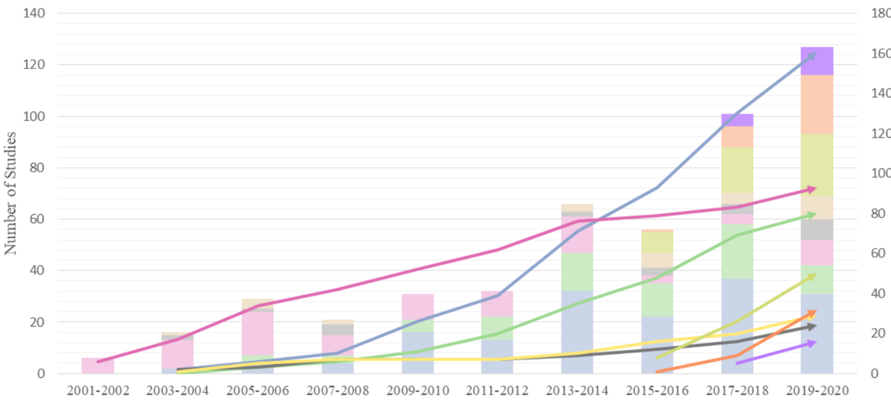
Harmful algal blooms (HABs) present significant ecological and public health risks, necessitating effective monitoring and management strategies. Recent advancements in machine learning techniques have demonstrated promise in improving change detection of HABs by analyzing extensive datasets from satellite imagery and in situ measurements. These methods allow for the identification of bloom patterns and their dynamics with greater accuracy and timeliness. By utilizing algorithms such as convolutional neural networks and support vector machines, researchers can create predictive models that support early warning systems, ultimately leading to enhanced resource allocation and mitigation efforts to protect water quality and ecosystem health.
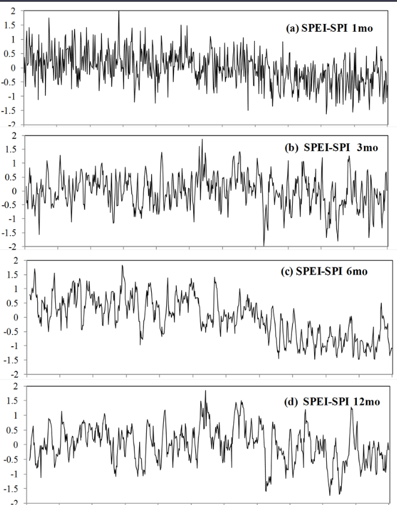
The process of calculating the Standardized Precipitation Index (SPI) and the Standardized Precipitation Evapotranspiration Index (SPEI) consists of several steps that utilize NetCDF (.nc) files. First, the NetCDF files are read to extract relevant variables, including precipitation and temperature data. Next, graphical plots of the extracted data can be generated to visualize trends. The data is then exported to a .CSV file for further analysis. Subsequently, the SPI is computed using precipitation data over a specified time scale, while the SPEI is calculated by incorporating both precipitation and potential evapotranspiration, enabling a comprehensive assessment of drought conditions.
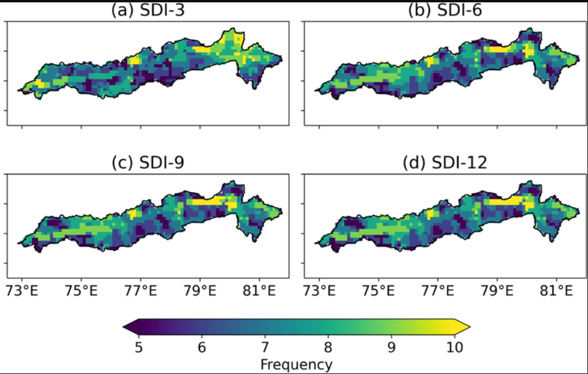
The Streamflow Drought Index (SDI) is an essential tool for evaluating hydrological drought conditions by quantifying streamflow deficits over time. Utilizing the SDI in R enables researchers and water resource managers to apply efficient coding techniques for processing and analyzing streamflow data. By harnessing R's extensive libraries, such as zoo and dplyr, users can compute SDI values, visualize trends, and make informed decisions about water management and conservation strategies. This analytical approach deepens our understanding of drought dynamics and supports proactive measures to alleviate the impacts of water scarcity.
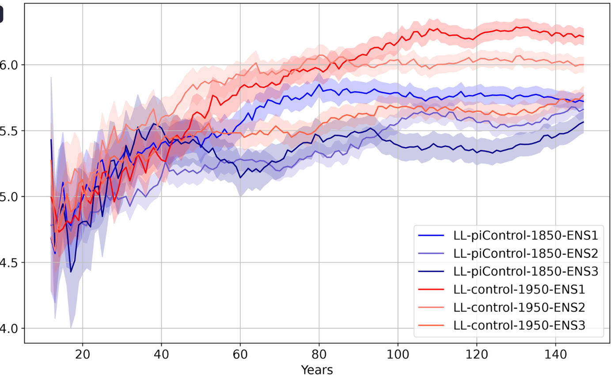
Shaded Plot for Climate Model The Shaded Plot for the Climate Model Intercomparison Project (CMIP) in R serves as a vital visualization tool for comparing outputs from various climate models. By incorporating uncertainty through shading, this technique effectively emphasizes variations among different models, thereby enhancing the interpretability of results. By utilizing packages like ggplot2 and gridExtra, researchers can generate dynamic and informative plots that illustrate model performance over time. This method not only promotes a clearer understanding of climate projections but also supports the evaluation of model robustness, guiding policy decisions and scientific discussions in climate research.
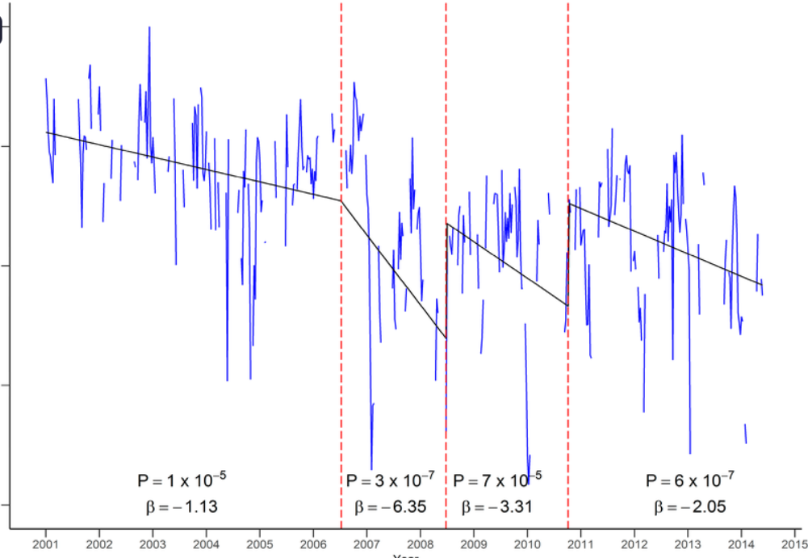
The detection of wildfire trends can be effectively accomplished through the integration of the Normalized Burn Ratio (NBR) index and the Breaks For Additive Season and Trend (BFAST) algorithm. The NBR index acts as a robust tool for identifying burned areas by analyzing satellite imagery, while BFAST aids in detecting abrupt changes in time-series data, enabling researchers to accurately pinpoint disturbances. Implementing these methods in R allows for the visualization of the number of detected disturbances over time, offering critical insights into wildfire patterns and their implications for ecosystem management and policy planning.
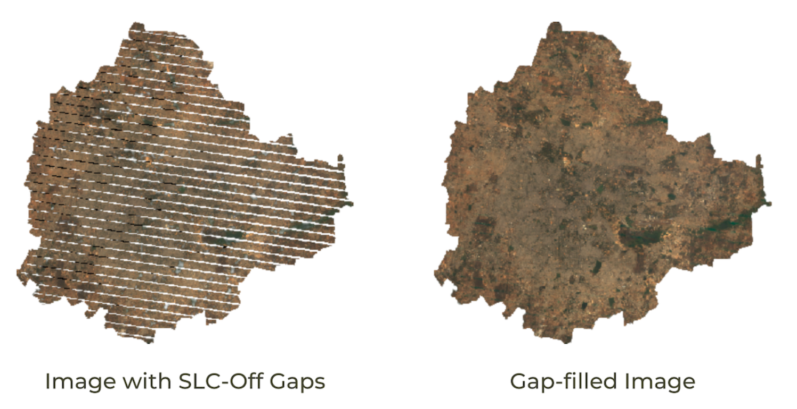
This code illustrates the extraction of the Normalized Burn Ratio (NBR) over a 20-year period using Landsat-5, Landsat-7, and Landsat-8 imagery within the Google Earth Engine (GEE) platform. To ensure data quality, the Scan Line Corrector (SLC) issue in Landsat-7 imagery was effectively addressed using the focal_mean algorithm. This method guarantees accurate and consistent NBR calculations across the dataset, offering reliable insights for long-term analysis.
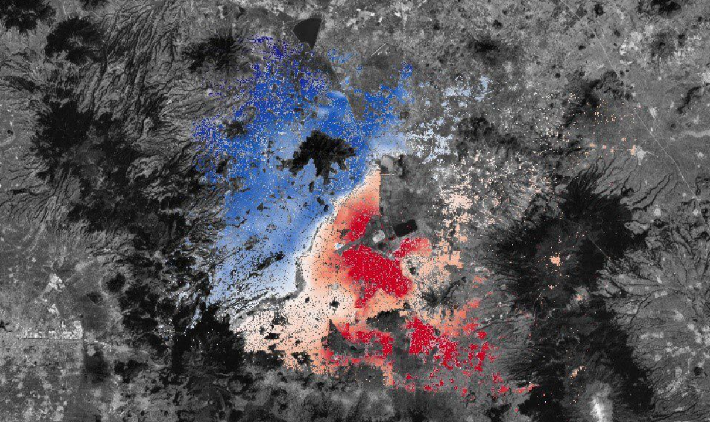
Land subsidence, a significant geohazard, can be effectively monitored using remote sensing techniques such as Synthetic Aperture Radar (SAR) and optical imagery. By utilizing Sentinel-1 and Sentinel-2 data within the Google Earth Engine platform, researchers can analyze reductions in SAR amplitude to pinpoint areas undergoing subsidence. This method enables high-resolution, large-scale assessments, offering critical insights for managing risks related to infrastructure, water resources, and urban development in affected regions. The integration of these datasets provides an efficient and cost-effective solution for continuous monitoring and early detection.
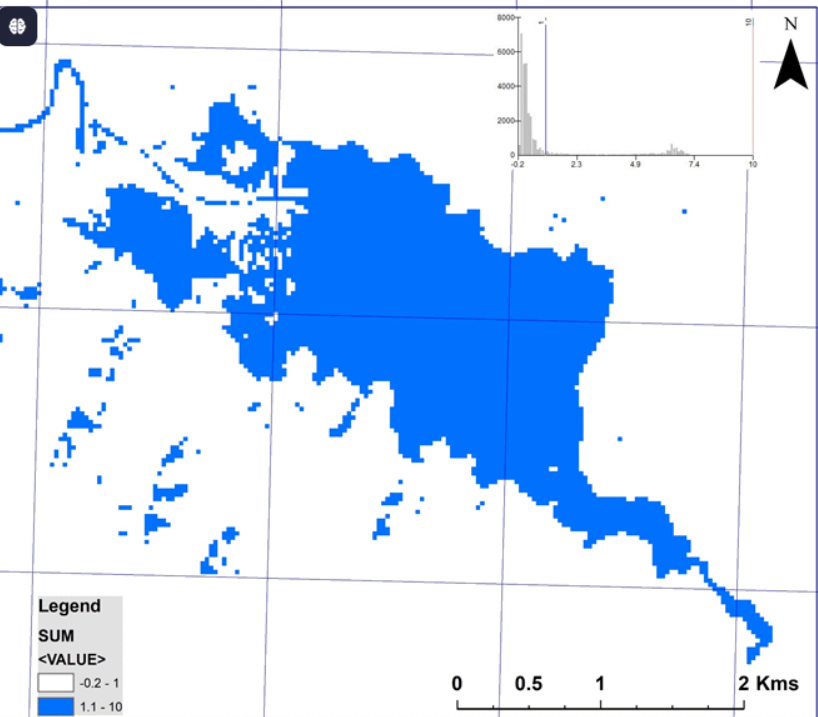
The calculation of Surface Water Area using the Modified Normalized Difference Water Index (MNDWI), derived from Sentinel-2 imagery, can be efficiently conducted within Google Earth Engine (GEE). By utilizing the green and shortwave infrared (SWIR) bands, MNDWI enhances water body detection by reducing interference from built-up areas and vegetation. GEE serves as a robust platform for processing large-scale satellite data, facilitating accurate identification and quantification of surface water areas over time. This approach supports environmental monitoring, water resource management, and climate impact assessments.
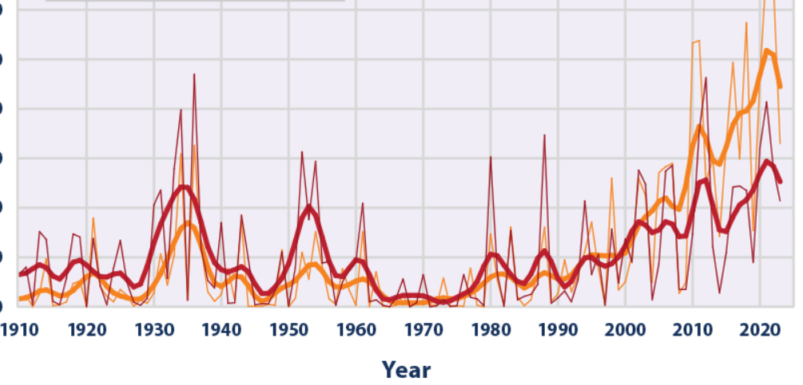
The extraction of climate indices is essential for monitoring and understanding environmental changes over time. Using Landsat-8 satellite imagery, indices such as the Modified Normalized Difference Water Index (MNDWI), Normalized Difference Vegetation Index (NDVI), Normalized Difference Built-up Index (NDBI), and Normalized Difference Snow Index (NDSI) can be derived to evaluate water bodies, urbanization, and snow cover, respectively. Furthermore, key climatic parameters like precipitation and Land Surface Temperature (LST) can be analyzed to offer insights into regional climate patterns and their variations. By processing and analyzing a decade of Landsat-8 data, these indices empower researchers and policymakers to track long-term environmental trends, assess the impacts of climate change, and plan for sustainable resource management, ensuring data-driven decision-making for environmental resilience.
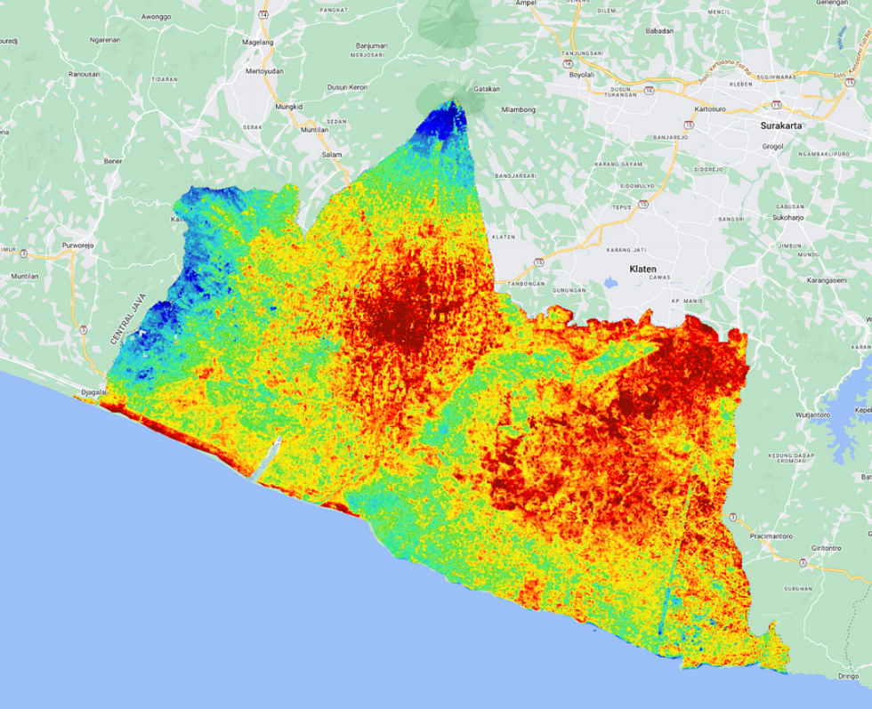
Land Surface Temperature (LST) is a vital parameter for understanding surface energy balance, urban heat island effects, and environmental changes. Using Landsat 8 Surface Reflectance Tier 2 imagery, LST can be calculated and analyzed over time to evaluate temporal and spatial patterns. This process involves deriving LST from the thermal infrared bands of Landsat 8, applying atmospheric corrections, and converting the data into temperature values using established algorithms. By creating an LST time series, researchers can visualize trends, identify anomalies, and monitor changes in land surface conditions. The integration of Landsat 8's high-resolution data with advanced geospatial tools facilitates accurate and detailed analysis, supporting diverse applications in climate studies, urban planning, and environmental monitoring.
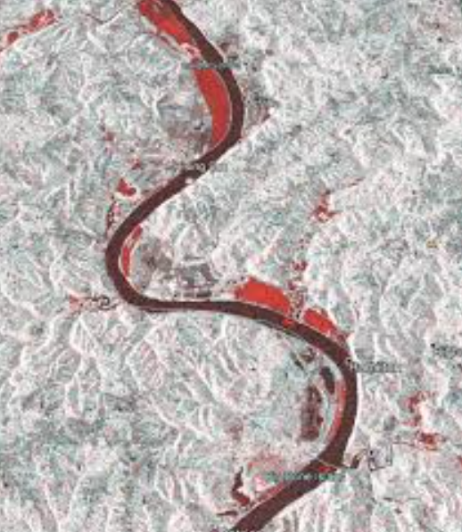
Detecting flood inundation and calculating flooded areas is a critical application of remote sensing systems, particularly using Sentinel-1 Synthetic Aperture Radar (SAR) data in Google Earth Engine (GEE). This process involves essential steps to ensure accuracy and precision, starting with filtering and preprocessing the radar imagery to remove irrelevant data and reduce speckle noise, a common issue in SAR datasets. The refined data is then analyzed to differentiate between water bodies and flood-affected areas, leveraging the sensor's capability to penetrate cloud cover and provide consistent observations under all weather conditions. The results are subsequently visualized through GEE's mapping tools, enabling clear identification of impacted regions, and can be exported for further analysis and integration into flood management systems. This workflow offers an efficient and robust approach for detecting floods and estimating their extent, supporting disaster response and mitigation efforts.
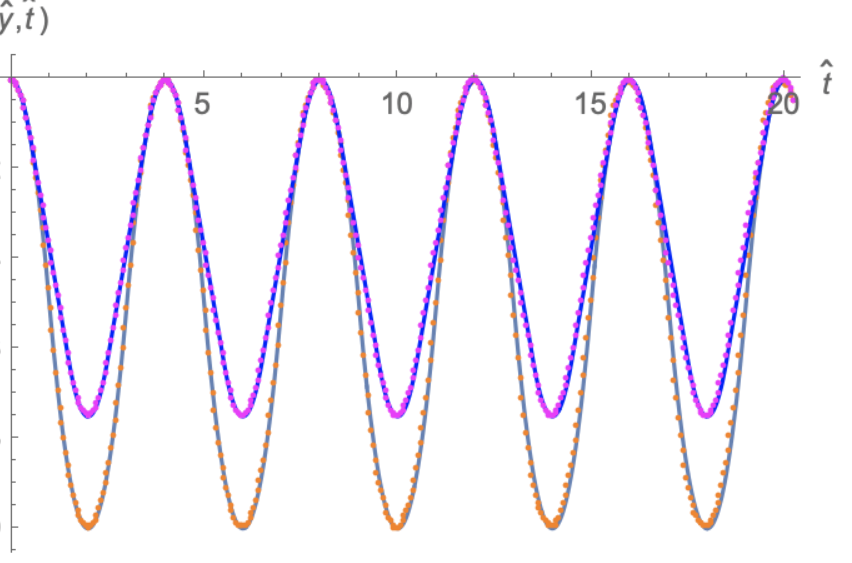
The MATLAB code presented focuses on the numerical solution of 1-dimensional elasto-dynamics problems using the finite element method (FEM). This implementation models the dynamic behavior of elastic materials by discretizing the governing equations into finite elements, allowing for accurate simulation of wave propagation and deformation over time. The code employs standard FEM procedures, including the formulation of stiffness and mass matrices, along with time integration schemes to solve the resulting system of equations. This approach is particularly valuable for analyzing linear elastic systems under dynamic loading, offering an efficient and versatile tool for engineers and researchers in structural dynamics and wave mechanics.
Interested in collaboration or have questions about my research? Reach out to me!
I'm always open to research collaborations in the fields of remote sensing, environmental monitoring, and machine learning applications.
Collaboration Opportunities